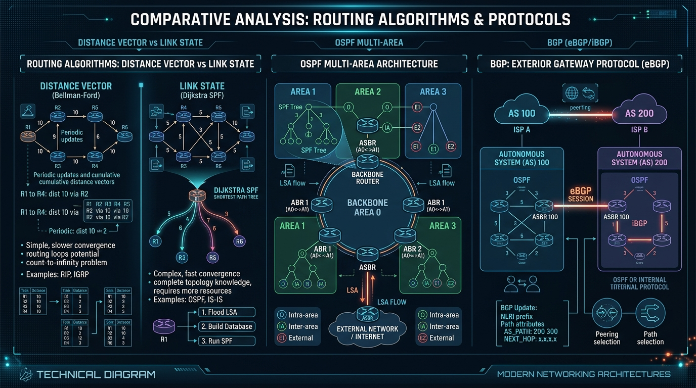

Master Static vs Dynamic routing, Distance Vector (Bellman-Ford) vs Link State (Dijkstra) algorithms, and interior & exterior routing protocols (RIP, OSPF, EIGRP, BGP).
| Feature | Static Routing | Dynamic Routing |
|---|---|---|
| Route Configuration | Manually entered by network administrator | Learned automatically via routing protocols |
| Network Changes | Does NOT adapt automatically to topology changes | Adapts automatically to link failures & topology changes |
| Overhead & CPU | Zero CPU/RAM overhead on routers | Consumes CPU, RAM, and bandwidth for protocol messages |
| Scalability | Suitable only for small networks | Highly scalable for large enterprises & Internet |
| Security | High (Routes cannot be spoofed by rogue routers) | Requires authentication to prevent rogue route injection |
Each router maintains a table giving the **distance (metric)** and **vector (direction/next-hop)** to every destination. Routers periodically share their entire routing table only with **immediate neighbors** ("Routing by rumor").
When a link fails, Distance Vector algorithms can take a long time to converge, causing routing loops where metric values count up to infinity (16).
Every router floods **Link State Advertisements (LSAs)** to ALL routers in the network. Each router builds a complete **Link State Database (LSDB)** representing the entire topology map, then independently runs **Dijkstra's Shortest Path First (SPF)** algorithm to compute the shortest path tree to all nodes.
A classic Distance Vector IGP protocol. Uses **Hop Count** as metric (Max 15 hops; 16 = unreachable). Periodically broadcasts entire routing table every 30 seconds.
RIPv1 (classful, no subnet mask in updates) vs RIPv2 (classless, supports VLSM & CIDR, multicast 224.0.0.9).
An open-standard Link State IGP protocol operating directly over IP (Protocol 89). Uses Cost as metric based on bandwidth: Cost = 108 / Bandwidth (bps).
Cisco's advanced Distance Vector protocol. Uses the **DUAL (Diffusing Update Algorithm)** for rapid, loop-free convergence. Calculates a composite metric based on **Bandwidth and Delay**.
The standard **Exterior Gateway Protocol (EGP)** that powers the global Internet. Connects different **Autonomous Systems (AS)** using a **Path Vector** routing algorithm over reliable **TCP Port 179**.
Uses policy-based routing and BGP attributes like AS-PATH (list of AS numbers traversed, preventing loops) and NEXT-HOP.

| Protocol | Type | Algorithm | Metric | Transport | Ad administrative Dist (AD) |
|---|---|---|---|---|---|
| RIPv2 | Distance Vector (IGP) | Bellman-Ford | Hop Count (Max 15) | UDP Port 520 | 120 |
| OSPF | Link State (IGP) | Dijkstra SPF | Cost (108 / BW) | IP Protocol 89 | 110 |
| EIGRP | Advanced Distance Vector | DUAL | Composite (BW + Delay) | IP Protocol 88 | 90 (Internal) |
| BGP | Path Vector (EGP) | Path Vector | BGP Path Attributes | TCP Port 179 | 20 (eBGP) / 200 (iBGP) |